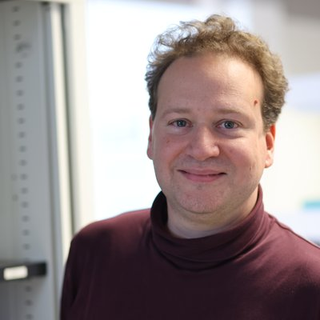
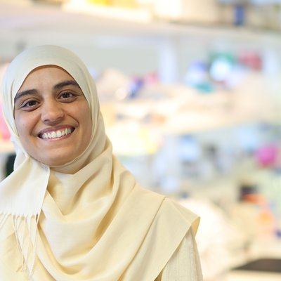
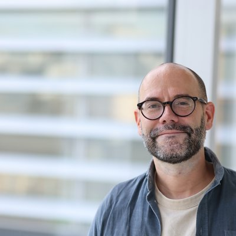
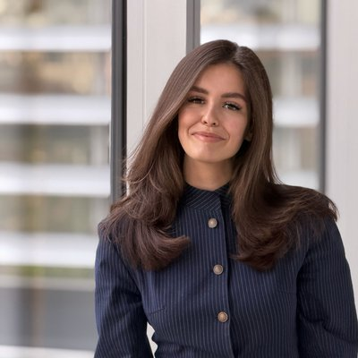
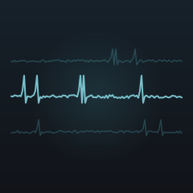
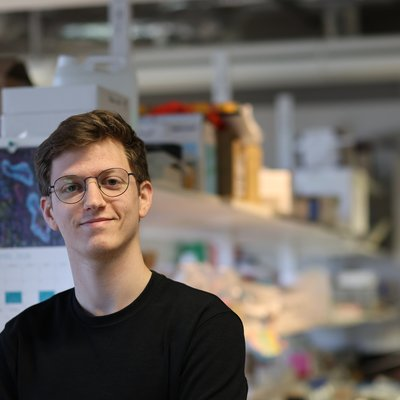
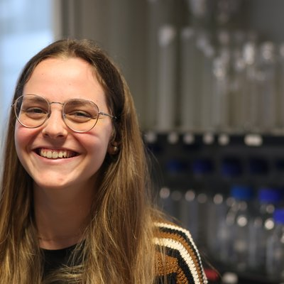
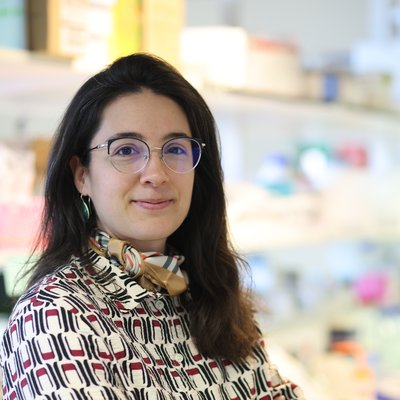
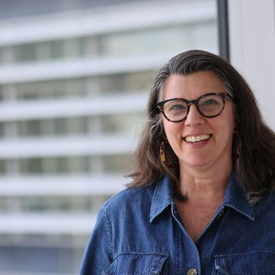
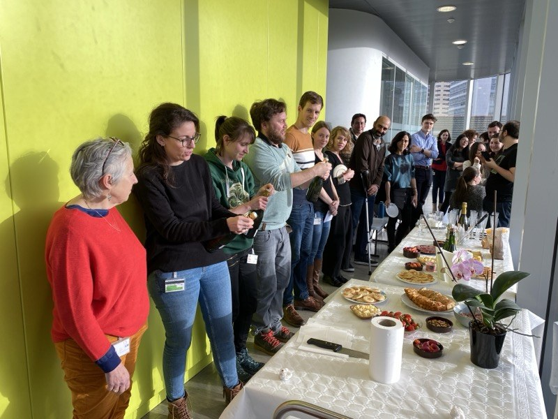

Our Team
The People Behind the Science

The Renier Lab at the Paris Brain Institute (ICM), Paris
Principal Investigator

Nicolas Renier
Team Leader
After a master at the Ecole Normale Supérieure, Paris, Nicolas trained in developmental biology in the lab of Alain Chédotal at the Vision Institute. For his post-doc at Rockefeller University, he co-developed the iDISCO and ClearMap platform for labeling, imaging and analysis of intact biological samples. He opened his lab at the Paris Brain Institute in January 2017.
Researchers & Engineers

Ahlem Assali
Postdoctoral Researcher
Ahlem performed her PhD in developmental neurobiology in Patricia Gaspar's lab, then moved to Chris Cowan's lab for her first postdoc, exploring molecular mechanisms in neurodevelopmental disorders. She is currently studying neurovascular plasticity in the mother brain and its contribution to maternal behaviors.

Etienne Doumazane
Research Engineer
Etienne did his undergraduate studies at the Ecole Normale Supérieure, to then move to a PhD studying the molecular structure of transmembrane receptors in Montpellier. He taught engineering majors at ENCPB in Paris. Now, his work focuses on the molecular mapping of brain tumors.

Alina Mikhailenko
Assistant Engineer
Research Engineer with an MSc in Data Science and 5+ years of deep learning experience across diverse scientific domains, from segmentation and classification to reconstruction and generative modeling. Currently developing AI models for large-scale 3D brain vascular analysis.

Charly Rousseau
Research Engineer
Research engineer with a PhD in neurophysiology. Charly specialises in data analysis (imaging, electrophysiology and behaviour), embedded science equipment design and automated behaviour systems. He currently develops the ClearMap lightsheet image analysis software.

Maxime Boyer
Assistant Engineer
Currently completing his final year of his Master of Engineering at CentraleSupélec, Maxime specializes in biomedical engineering. He has worked on improving vessel segmentation methods for enhanced analysis of lightsheet microscopy data.
PhD Candidates

Gabrièle Lienhard
PhD Candidate
Trained in life sciences at Ecole Normale Supérieure Paris-Saclay and doctor of veterinary medicine. Gabrièle is currently pursuing a PhD investigating pregnancy-associated neurovascular plasticity.

Marwa Cherfaoui
PhD Candidate
Pharmacist trained at Université Catholique de Louvain, with further specialization in preclinical and clinical pharmacology from Université Paris Cité. She is currently working on the role of immunity in brain vascular plasticity during pregnancy, exploring how immune-vascular interactions shape maternal vascular remodeling and behavior.

Giorgia Barra
PhD Candidate
PhD candidate with an M.Sc. in Mathematical Engineering from Politecnico di Torino, with a strong background in applied mathematics and quantitative modeling. Her research focuses on mathematical and computational modeling of cerebral and retinal blood flow.
Lab Management

Evangelia Papasotiriou
Lab Manager
Evangelia's multidisciplinary studies in chemistry, biology, and medicine laid the groundwork for her PhD in identifying therapeutic targets. With international experience in research laboratories in Greece, Germany, and southern France, she brings scientific expertise with strong organizational skills to support research operations.

Marianne Goldsztejn
Assistant Lab Manager
Marianne provides administrative support to the lab team, bringing administrative management experience working with multicultural teams on site and remotely.
Alumni
Former Lab Members
Researchers
Patricia Gaspar
Researcher
Silvina L Diaz
Researcher
Postdoctoral Researchers
Christoph Kirst
Postdoctoral Researcher
Alba Vieites Prado
Postdoctoral Researcher
PhD Students
Thomas Topilko
PhD Student
Grace Houser
PhD Student
Sophie Skriabine
PhD Student
Elisa de Launoit
PhD Student
Ana Marta Capaz
PhD Student
Engineers
Florine Verny
Engineer
Domitille Rajot
Engineer
Rotation & Master Students
Paul Bertin
Rotation Student
Rémi Pomme
Rotation Student
Catarina Martins Pacheco
Master Student
Julie Poisson
Rotation Student
Lab Life
Beyond the Bench


